Contents
1. What Even Is Noise?
Here is a thing that happens: you take a perfectly reasonable photograph and somehow it comes out grainy. Or you scan a document and half the pixels are wrong. Or your radar sensor returns a signal that looks like someone shook a snow globe over the actual image. All of these are noise random corruption layered on top of a signal you actually care about. Denoising is the problem of undoing that corruption. Super-resolution is the related problem of recovering detail that was never there to begin with because the sensor couldn't capture it. Blind image restoration is both simultaneously, and you don't even know what degraded the image in the first place.
Formally: given a corrupted observation \(y\), where \(y = Hx + \eta\) for some degradation operator \(H\) (blur, downsampling) and noise \(\eta\) (Gaussian, Poisson, speckle), recover \(\hat{x} \approx x\). The problem is ill-posed infinitely many clean images could produce the same \(y\). Every single algorithm below is just a different way of imposing a prior on what \(x\) is allowed to look like. That prior is the whole game.
2. Classical Methods
2.1 Wiener Filter
The Wiener filter is the answer to the question: if I'm only allowed a linear operation and I assume both the signal and noise are Gaussian, what's the optimal thing to do? The answer, derived by minimising expected squared error \(\mathbb{E}[\|\hat{x} - x\|^2]\), is a simple multiplication in the Fourier domain:
where \(S_x\) and \(S_\eta\) are the power spectra of the signal and noise respectively. The intuition is clean: at frequencies where the signal-to-noise ratio \(S_x / S_\eta\) is large (low frequencies, smooth regions), pass the signal through almost unchanged. At frequencies where the noise dominates (high frequencies), attenuate heavily. The problem is that this same attenuation kills edges and fine texture because edges are also high-frequency, and the filter has no way to tell a sharp edge from random noise. The result is the classic over-smoothed look: correct on average, visibly blurry, utterly unsatisfying. But it requires zero training and runs in microseconds, which makes it the right answer in a surprising number of real-world settings.
2.2 BM3D The Classical King
BM3D [1] is what happens when you spend two decades really thinking about what makes natural images structured. The core insight is deceptively simple: natural images repeat themselves. A patch of sky somewhere in the image probably looks almost identical to another patch of sky 200 pixels away. If you find all those similar patches, stack them into a 3D array, and filter in the transform domain where noise, being spatially uncorrelated, looks very different from the coherent structure of repeated patches you can separate signal from noise far more effectively than any local filter. BM3D runs this twice: first with hard thresholding (\(\mathcal{T}^{-1}(\mathcal{S}_\lambda(\mathcal{T}(X_{3D})))\), zeroing out transform coefficients below \(\lambda\sigma\)), then with a Wiener filter step that uses the first stage's estimate to calibrate per-coefficient weights. The result held the denoising SOTA for nearly a decade not because BM3D has any model of what's in the image semantically, but because exploiting non-local self-similarity turns out to be a very powerful structural prior. Its weakness: the block matching is \(O(N^2)\) in the number of patches, it's entirely CPU-bound, and it fundamentally cannot use the kind of semantic understanding ("faces have eyes, skies are smooth") that data-driven methods learn automatically.
3. Shallow CNNs: The First Wave
3.1 SRCNN Three Layers That Changed Everything
Dong et al. (2014) [2] asked the question that seems obvious in retrospect: can you replace the entire sparse-coding super-resolution pipeline with a single neural network trained end-to-end? The answer was yes, and the network they used was just three convolutional layers. Looking at the architecture: the first layer (9×9 kernels, \(n_1\) filters) extracts patch representations from the bicubic-upsampled LR image it's learning a dictionary of local texture patterns, exactly like the patch extraction step in sparse-coding SR. The second layer (1×1 or 5×5 kernels, \(n_2\) filters) maps these low-resolution patch representations nonlinearly to high-resolution representations this is the sparse coding step, learning which HR patches correspond to which LR patches. The third layer (5×5 kernels, 1 filter per output channel) reconstructs the final image by aggregating these HR representations the reconstruction step. The crucial difference from the classical pipeline: all three operations are convolutions, all parameters are optimised jointly with a single MSE loss \(\mathcal{L} = \frac{1}{n}\sum_i \|F(Y_i) - X_i\|^2\). What used to require hand-tuning three separate modules now optimises itself. SRCNN's main bottleneck is that it bicubic-upsamples first all the expensive computation runs at full HR resolution, and the network can't recover information that was already destroyed by the pre-upsampling step.
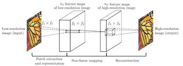
3.2 DnCNN Predict the Dirt, Not the Floor
Zhang et al. (2017) [3] made a choice that looks small but makes a large difference: train the network to predict the noise, not the clean image. So the loss is \(\mathcal{L}(\Theta) = \frac{1}{2N}\sum_{i=1}^N \|\mathcal{R}(y_i; \Theta) - (y_i - x_i)\|_F^2\), and the denoised output is \(\hat{x} = y - \mathcal{R}(y)\). The reason this works better than predicting \(x\) directly is that noise is structurally simpler than clean images it's approximately zero-mean and spatially uncorrelated, which means predicting it is an easier regression target for the network. The architecture (shown above) is a plain chain: a first Conv+ReLU layer, then \(D-2\) middle layers each with Conv+BatchNorm+ReLU, then a final Conv producing the residual. Batch normalisation here serves two purposes it accelerates convergence by normalising intermediate activations, and it implicitly gives the network some noise-level awareness, because noisier batches have larger activation variance which modulates the learned BN scale parameters \(\gamma\) and shift \(\beta\). This is what allows a single DnCNN-B model to handle arbitrary noise levels \(\sigma \in [0, 55]\) without being told \(\sigma\) at test time the BN parameters across layers carry an implicit encoding of the noise level from the mini-batch statistics.
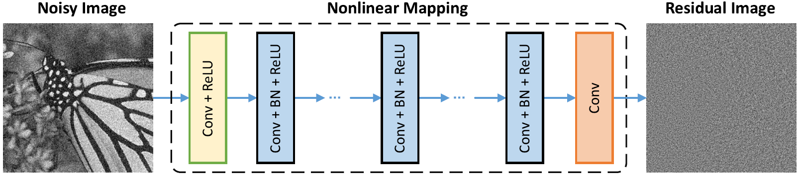
3.3 FFDNet Tell the Network How Noisy It Is
DnCNN's blind denoising is clever but has a fundamental limitation: the network can't be spatially adaptive. Real noise is almost never uniform in medical and radar imagery, noise variance typically scales with local signal intensity. FFDNet (2018) [4] solves this with a conceptually clean fix: concatenate a noise level map \(M\) as an explicit input channel alongside the image. Now the network learns a family of denoising functions indexed by \(\sigma\), and you can assign different noise levels to different image regions at inference time without retraining. The clever engineering trick visible in the diagram: before the CNN, the image is downsampled into 4 sub-images using pixel-shuffle reversibly rearranging spatial pixels into channel dimensions (a 2×2 neighbourhood of pixels becomes 4 separate channels). This halves each spatial dimension while quadrupling channels, meaning all subsequent convolutions run on a much smaller spatial grid, enlarging the effective receptive field and reducing cost by ~4×. The noise level map is similarly downsampled to match. After the plain CNN, pixel-unshuffle reconstructs the full-resolution denoised image. You're trading spatial resolution for channel depth early, doing the heavy thinking at a cheaper spatial resolution, and expanding back out a pattern that appears repeatedly in more sophisticated architectures later.
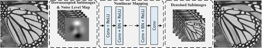
4. Going Deep : Residual and Dense Networks
4.1 EDSR Kill the Normalisation
Lim et al. (2017) [5] won NTIRE 2017 by removing batch normalisation from a residual SR network. That sounds like a minor tweak but it's a principled one. In the EDSR diagram you can see the comparison directly: the SRGAN residual block has Conv→ReLU→Conv→BN on each branch, while EDSR replaces it with Conv→ReLU→Conv→Mult (residual scaling). The reason BN is harmful for SR: normalisation divides features by their batch standard deviation, which destroys the absolute scale and range information that pixel-level reconstruction depends on. In classification, whether a feature is 0.1 or 1.0 is irrelevant what matters is which class score is largest. In SR, the absolute value of a pixel matters enormously. Without BN, the network can use much wider feature maps without gradient explosion EDSR uses 256 channels where BN-based models were limited to 64 and substitutes the tiny residual scaling factor ×0.1 (the "Mult" block in the diagram) to prevent gradients from blowing up during early training. The multiple upsampling tails shown on the right (×2, ×3, ×4 via pixel-shuffle) let a single MDSR variant handle all SR scales, sharing the expensive residual body while having scale-specific heads. EDSR established the no-BN principle that almost every subsequent SR architecture inherited.
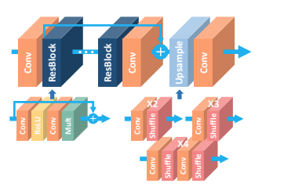
4.2 RCAN Some Channels Matter More Than Others
Zhang et al. (2018) [6] asked: in a deep feature map with 64 channels, does every channel contribute equally to reconstruction quality? Clearly not some channels pick up edges and high-frequency texture that are critical for SR, while others carry smooth low-frequency signals that were already well-handled. RCAN introduces channel attention to exploit this, arranged in a Residual-in-Residual (RIR) hierarchy visible in the diagram: G Residual Groups each contain B Residual Channel Attention Blocks (RCAB), short skip connections run within each group, and a long skip connection runs across the entire RIR from input to output. Inside each RCAB, channel attention works as a squeeze-and-excitation gate: global average pool the feature map \(F \in \mathbb{R}^{C \times H \times W}\) down to a channel descriptor \(s \in \mathbb{R}^C\) (the "squeeze"), then pass through two 1×1 conv layers with ReLU and sigmoid (the "excitation") to produce per-channel weights \(w \in [0,1]^C\), then multiply these weights back into the feature map channel-wise. The network learns to amplify the channels encoding high-frequency reconstruction cues and suppress the channels that are mostly carrying smoothed, low-frequency features an adaptive basis selection that the network figures out from data rather than being hand-coded. The RIR hierarchy with its multiple skip connections provides very stable gradient flow even at 400+ effective layers, which is how RCAN manages 10 groups × 20 blocks = 200 RCABs without training instability.
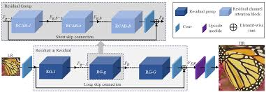
4.3 ESRGAN / Real-ESRGAN / BSRGAN Density as a Design Philosophy
ESRGAN (Wang et al., 2018) [7] replaced the residual block with the RRDB Residual-in-Residual Dense Block and the diagram makes the structure explicit. On the left is the original SRGAN residual block with BN. On the right is RRDB: three Dense Blocks arranged in a residual-in-residual structure, with the orange arrows inside each Dense Block showing the key operation. In a standard residual network, layer \(k\) sees only layer \(k{-}1\)'s output. In a dense block, every layer sees the outputs of all preceding layers via concatenation: layer \(k\) receives feature maps from layers \(1, 2, \ldots, k{-}1\) directly. This means the network can simultaneously use very early low-level features (raw texture, noise patterns) and much later high-level features (edge structures, object shapes) at every depth nothing gets progressively transformed away. Three of these Dense Blocks are then arranged with residual connections between them (the dashed connections with ×β scaling between dense blocks), and the whole RRDB gets another residual connection around it. 23 RRDBs stacked in sequence, all BN-free, give the generator 16.7M parameters that can handle remarkably diverse degradations after end-to-end training. The discriminator uses a Relativistic average GAN formulation instead of asking "is this real?", it asks "is this real image more realistic than this fake image, on average across the batch?" which provides richer gradient signal and produces substantially sharper texture without the mode collapse of standard GANs.
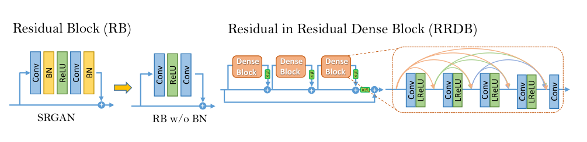
Real-ESRGAN (2021) [8] keeps the RRDB generator unchanged but overhauls the training degradation. Looking at the architecture figure: for ×2 and ×4 SR, the input is first passed through a pixel_unshuffle operation the same trick as FFDNet, spatially compressing the input into more channels before the RRDB stack. This means all 23 RRDB blocks operate at half or quarter spatial resolution, dramatically reducing compute while giving each block access to more spatial context per filter. The real innovation is in training: Real-ESRGAN constructs degradations by applying two sequential rounds of randomly sampled blur (Gaussian or sinc kernels), downsampling (bicubic/bilinear/nearest), noise (Gaussian or Poisson), and JPEG compression in that order, twice. This "high-order degradation" space is designed to cover the compound corruptions that real-world images accumulate through capture, processing, transmission, and re-encoding. The Poisson noise component is especially relevant for our task: Poisson noise (photon shot noise, where variance equals mean signal) is a first-order model of speckle in coherent imaging systems like radar and ultrasound.
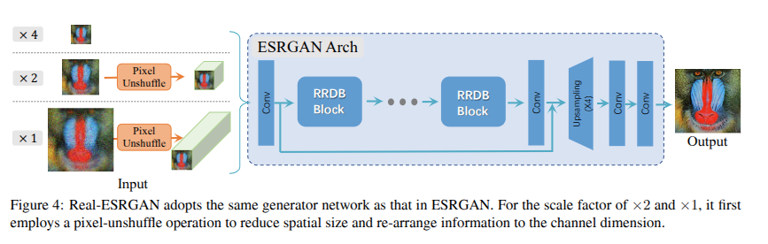
BSRGAN (Zhang et al., 2021) [9] takes degradation diversity one step further: instead of a fixed pipeline order, it randomly shuffles the order of operations each time. The diagram shows this explicitly multiple rows representing different degradation orderings, with \(D^\text{iso}_\text{down}\), \(B_\text{iso}\), \(N_G\), \(N_\text{JPEG}\) appearing in different sequences across rows. The reasoning is that real-world corruption has no canonical order a photo might be compressed before being transmitted through a blurry channel, or noised before downsampling. By training on all permutations uniformly, the model learns to invert degradations without assuming any particular ordering, making it substantially more robust to out-of-distribution real-world inputs.
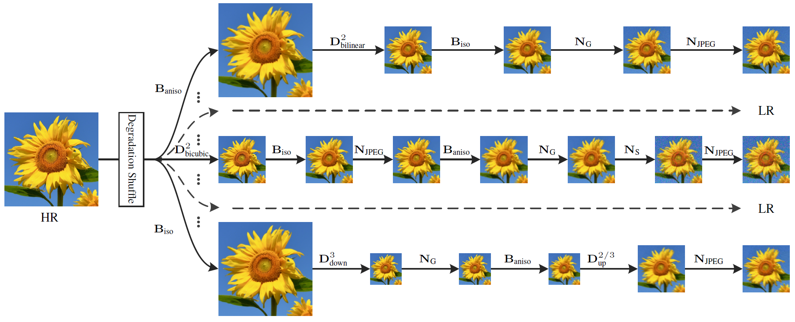
5. Multi-Scale Encoder-Decoders
5.1 MPRNet Fix It Progressively
Zamir et al. (2021) [10] decompose restoration into three sequential stages that progressively refine the image. The architecture diagram shows this clearly: Stage 1 and Stage 2 each take the original degraded image \(I\) as input, process it through a U-Net with Channel Attention Blocks (CAB), and output an intermediate restoration \(X_1\), \(X_2\). Stage 3 (ORSNet Original Resolution Sub-network) operates at full resolution using Original Resolution Blocks (ORB) that never downsample. The connection between stages is the Supervised Attention Module (SAM): at the end of each stage, the intermediate prediction is supervised directly with ground-truth loss, and the SAM generates spatial attention maps that selectively gate which features are passed to the next stage. Concretely, SAM takes the current stage's feature output \(F_\text{out}\) and the current stage's image prediction, applies a sigmoid-gated multiplication to produce refined features, and concatenates these with the original degraded image features \(F_\text{in}\) before passing to the next stage. This accomplishes two things: intermediate supervision ensures gradients reach early network layers without vanishing, and the attention gating means later stages receive a cleaned-up feature set that emphasises the structures not yet restored, rather than naively inheriting all features including the already-fixed ones.
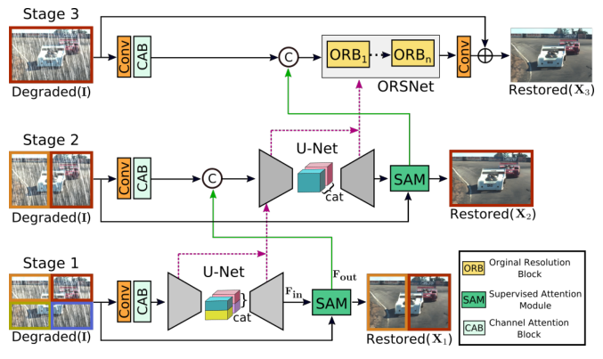
5.2 NAFNet You Don't Actually Need Nonlinear Activations
Chen et al. (2022) [11] ran a systematic ablation of a transformer-like baseline, removing one component at a time, and arrived at a surprising conclusion: if you replace GELU activations with element-wise multiplication of split feature halves, and replace standard channel attention with a single linear pooling layer, you can match or beat SOTA on real denoising (40.30 dB on SIDD) with zero ReLU/GELU/sigmoid units in the entire network. The diagram compares three architectural families: (a) multi-stage which processes multiple sequential outputs at a single resolution, (b) multi-scale fusion which processes at multiple spatial resolutions and fuses across all of them simultaneously, and (c) the U-Net, which processes sequentially at each resolution scale with skip connections. NAFNet uses the U-Net structure (c), operating at \(H\times W\), \(\frac{H}{2}\times\frac{W}{2}\), and \(\frac{H}{4}\times\frac{W}{4}\) simultaneously. Inside each NAFBlock, the SimpleGate operation \(\text{SG}(x) = x_1 \odot x_2\) (where \(x = [x_1 | x_2]\) is the feature map split along the channel dimension) provides multiplicative nonlinearity two different linear projections of the features, element-wise multiplied together without any of the saturation or threshold effects of sigmoid or ReLU. The Simple Channel Attention (SCA) is just global average pool → 1×1 conv → multiply with input, no sigmoid gate. The LayerNorm before each block ensures training stability. The result sounds like it shouldn't work, but it does: polynomial function approximation via products is sufficient for image restoration because natural image structure is locally smooth, and the U-Net hierarchy provides the multi-scale context that single-resolution architectures miss.
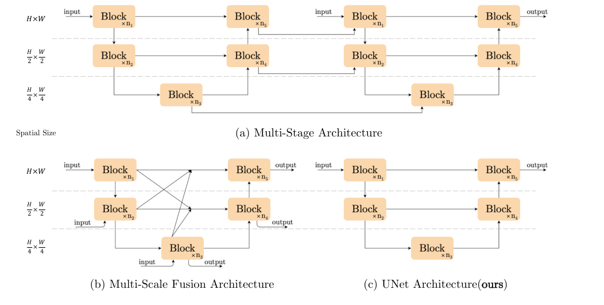
x.float().layernorm().to(dtype).
6. The Transformer Takeover
A 3×3 convolution sees 9 pixels. To connect two pixels 128 positions apart, you need 43 stacked 3×3 conv layers by which point the gradient signal from the far-away pixel is an archaeological relic. Transformers abolish this locality: self-attention directly connects every token to every other token in a single operation, \(\text{Attn}(Q,K,V) = \text{softmax}(QK^T/\sqrt{d})V\). For images this is remarkable and ruinously expensive: \(O(N^2)\) for an \(N\)-pixel image. The years 2021–2024 are the story of making that cost tractable without sacrificing what makes attention useful.
6.1 SwinIR Local Windows, Shifting Context
SwinIR (Liang et al., 2021) [12] uses the Swin Transformer's windowed attention to make the \(O(N^2)\) cost tractable. Looking at the architecture: the pipeline is shallow feature extraction (a single Conv) → deep feature extraction (stacked Residual Swin Transformer Blocks, RSTB) → reconstruction (pixel-shuffle). Inside each RSTB shown in the bottom diagram the Swin Transformer Layer (STL) alternates between Window-based MSA (W-MSA, attending within non-overlapping 8×8 windows) and Shifted Window MSA (SW-MSA, attending within windows shifted by (4,4) pixels). The LayerNorm → attention → LayerNorm → MLP structure follows standard transformer design. Each 8×8 window contains 64 tokens; attention within it costs \(O(64^2)\) instead of \(O(N^2)\) a reduction of \(N^2/64^2 \approx N^2/4096\). Cross-window information exchange happens through the shifting: a token in the top-left of one window finds itself in the bottom-right of the shifted window in the next layer, so it attends to tokens from the neighbouring window. Over many layers, information propagates across the full image through a chain of local-then-shifted-local interactions. The Conv at the end of each RSTB provides position-sensitive local processing that pure attention lacks making the block more powerful than either conv or attention alone.
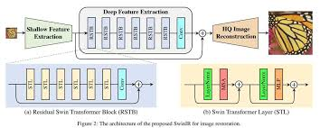
6.2 Restormer Turn the Attention Sideways
Zamir et al. (2022) [13] take a completely different approach to the \(O(N^2)\) problem: instead of restricting which spatial tokens can attend to which, flip the attention axis entirely. Standard self-attention is \(N \times N\) (every spatial position attends to every other). Restormer's Multi-Dconv Head Transposed Attention (MDTA) computes attention across the \(C\) channels instead of \(N\) spatial positions the attention matrix is \(C \times C\), independent of image resolution. Looking at the diagram: Q, K, V projections are computed as \(1\times1\) convolutions followed by depth-wise convolutions (the depthwise conv provides local spatial context that pure transposed attention lacks), producing tensors of shape \(C \times HW\). The attention is computed on the \(C \times C\) inner product matrix \(\hat{Q}^T\hat{K}/\sqrt{C}\), and the softmax-weighted sum is applied over channels: each output feature is a linear combination of \(V\) weighted by how similar the channel-level representations are globally. This means each output position gets a feature vector that reflects the correlation structure of all channels across the whole image effectively a form of global style or frequency recalibration. The Gated-Dconv FFN (GDFN) uses element-wise gating (similar to NAFNet's SimpleGate) to control information flow. The whole thing sits inside a 4-level U-Net with [4,6,6,8] transformer blocks per level, skip connections between encoder and decoder, and pixel-shuffle upsampling.
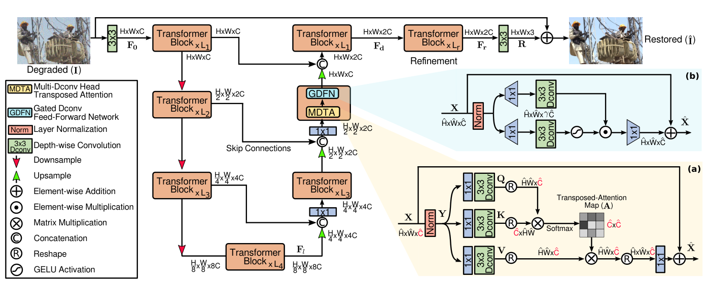
6.3 HAT & DRCT The Systematic Synthesis
By 2023, the community had accumulated a toolkit: window attention (SwinIR), channel attention (RCAN), overlapping windows, and dense inter-block connections (RRDB). HAT (Chen et al., 2023) [14] systematically combines the most effective of these. The diagram shows the full pipeline and block structure: the main body contains stacked Residual Hybrid Attention Groups (RHAG), each containing several Hybrid Attention Blocks (HAB) plus an Overlapping Cross-Attention Block (OCAB) at the end. Inside each HAB visible in the bottom-left of the diagram channel attention (CAB) and shifted window self-attention (S)W-MSA run in sequence, their outputs summed through a residual. CAB is the squeeze-and-excitation gate: global pool → sigmoid-gated 1×1 conv → scale features, identical in spirit to RCAN's channel attention but here combined with spatial attention. The OCAB (bottom-left detail) uses attention with overlapping windows keys and values are computed from a larger window than queries, meaning adjacent windows share context tokens and cross-window information flows without the 1-bit shift trick. HAT also adds same-task pre-training on ImageNet before fine-tuning on SR datasets, essentially injecting a massive natural image prior that narrows the gap between training and test distributions.
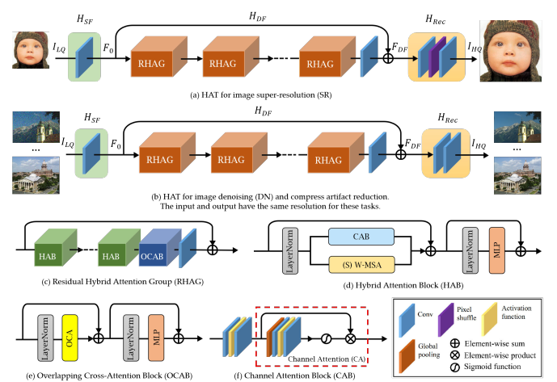
DRCT (Hsu et al., 2024) [15] addresses a different bottleneck: information loss through deep sequential processing. The diagram shows the architecture clearly shallow feature extraction (pink Conv) → multiple Residual Dense Groups (RDG) → image reconstruction. Inside each RDG, the structure is strikingly similar to RRDB but applied at the group level: STL → Conv → Concat → STL → Conv → Concat → ... with concatenation at every step, plus the Swin Transformer Layer (STL) block shown on the right (LayerNorm → W-MSA → LayerNorm → MLP). The dense connections via Concat at the group level mean group \(k\) receives feature maps from all preceding groups \(1, \ldots, k{-}1\) directly not through a chain of transformations, but as a direct concatenated input. This prevents the progressive loss of early-layer information that occurs in sequential stacking, and is the group-level analogue of what RRDB's dense connections do at the layer level. DRCT achieves 38.88 dB on Set5 ×2 with 27.41M parameters the current classical SR state-of-the-art.
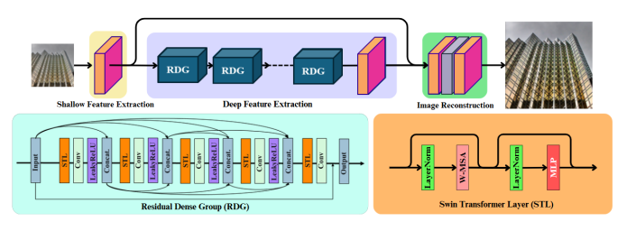
7. Diffusion Models Hallucinate Towards Truth
Every method so far frames restoration as regression: given noisy input, predict clean output, minimise pixel distance. This works, but has a fundamental problem. The space of plausible clean images for a given noisy input isn't a single point it's a distribution. For a heavily degraded input, many different clean images could have produced it. Regressing to the conditional mean \(\mathbb{E}[x | y]\) produces the blurry average of all these possibilities. Diffusion models instead sample from the full conditional distribution \(p(x | y)\) they produce one specific, sharp realisation rather than the blurry mean, at the cost of requiring many sequential neural network evaluations during inference.
7.1 SR3 Denoise Your Way to Sharp
SR3 (Saharia et al., 2021) [16] directly applies DDPM to SR. The diagram shows the two processes clearly: the forward process \(q\) (left to right) adds Gaussian noise to the HR target image \(y_0 \sim p(y|x)\) through \(T=2000\) steps until it becomes pure noise \(y_T \sim \mathcal{N}(0, I)\). The reverse inference process \(p_\theta\) (right to left) starts from that noise and iteratively denoises it, conditioned on the source LR image \(x\) (shown separately, not in the chain). At each timestep \(t\), the U-Net denoiser receives the concatenation of the noisy HR estimate and the upsampled LR image, and predicts the noise to subtract. The conditional score is \(\nabla_{y_t} \log p_\theta(y_t | x)\), and each reverse step takes a small move in the direction of higher probability under the clean image distribution conditioned on \(x\). The 2000 steps are necessary because each step uses a Gaussian approximation that only holds when consecutive steps are small meaning you need enough steps that the noise added per step is tiny. SR3 was the first to show that diffusion-based SR outperforms GAN-based SR on human preference scores, despite achieving lower PSNR the perceptual quality of a single sharp sample beats the blurry conditional mean.
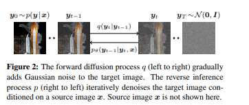
7.2 ResShift A Much Shorter Path
The 2000-step requirement makes SR3 impractical that's 2000 separate U-Net forward passes. ResShift (Yue et al., 2023) [17] fixes this by rethinking what the Markov chain should connect. Standard DDPM diffuses between the data distribution and a Gaussian a huge conceptual distance requiring many small steps. The ResShift diagram shows the alternative: build a Markov chain that directly connects the HR image \(z_0\) to the LR image \(z_{15}\) (at the right), by adding residual noise \(\eta\) to the difference between them at each step. The forward process (bottom arrow) shifts the residual \(x_0 - y_0\) gradually while adding noise parameterised by shifting coefficient \(\kappa\): \(\eta_t(x_t, x_0) = \alpha_t x_0 + (1-\alpha_t)y_0 + \sigma_t \varepsilon\). The reverse process (top arrow) denoises from the LR image back to the HR image through only \(T=15\) steps, because HR and LR images of the same scene are geometrically close in image space the residual path between them is short. Remarkably, this achieves 26.73 dB PSNR at 0.105 seconds per image the only diffusion SR method with competitive inference speed.
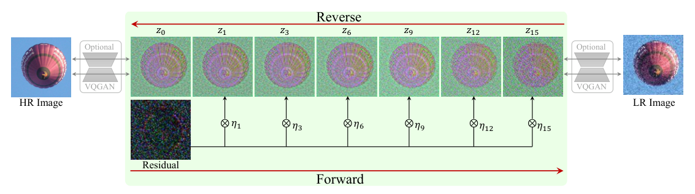
7.3 DiffBIR Two Stages, One Pipeline
DiffBIR (Lin et al., ECCV 2024) [18] takes a pragmatic two-stage approach visible directly in the diagram. The Restoration Module (RM) on the left takes the LQ (low quality) image through multiple task-specific restoration networks (BSR RM for blind SR, BFR RM for face restoration, BID RM for blind image denoising), producing a "high fidelity" intermediate that is clean but over-smoothed the structure is recovered but the fine texture is gone. This intermediate then feeds the Generation Module: a VAE encoder \(\mathcal{E}\) compresses it to a latent \(c_\text{RM}\), which is concatenated with the noisy latent \(z_t\) at each of the \(T\) diffusion steps, conditioning the Stable Diffusion U-Net denoiser \(\mathcal{D}\) on the restored structure. The optional Restoration Guidance at the bottom provides an iterative MSE correction in latent space computing a region-adaptive \(\mathcal{L}_\text{MSE}\) between the denoised estimate \(\mathcal{D}(\hat{z}_0)\) and the LQ image, and using its gradient to nudge the diffusion trajectory toward higher fidelity. Adjusting the guidance scale \(s\) (shown on the right with outputs at \(s=1, 0.5, 0\)) continuously trades perceptual quality for pixel fidelity \(s=0\) is pure diffusion (sharpest, lowest PSNR), \(s=1\) is heavily guided (blurrier, higher PSNR). The 1.7 billion parameters and 50 diffusion steps mean DiffBIR generates beautiful outputs, but at 10.9 seconds per image.
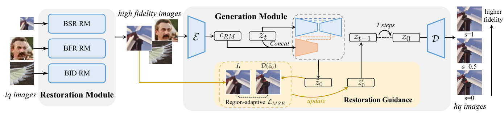
7.4 OSEDiff One Step Is Enough
OSEDiff (Wu et al., 2024) [19] compresses the entire multi-step diffusion chain into a single forward pass using Variational Score Distillation (VSD). The diagram shows the training setup: the degraded LR image \(x_L\) is first passed through a Prompt Extractor (DAPE, a DINO-based degradation-aware encoder from SeeSR [20]) to produce text conditioning, then encoded by the trainable VAE Encoder \(E_\theta\) with LoRA adapters (the flame symbols indicate trainable weights; snowflakes indicate frozen). The Diffusion Network \(\epsilon_\theta\) (also LoRA-finetuned) produces a one-step estimate \(\hat{z}_0\), decoded by the frozen VAE Decoder \(D_\theta\) to \(\hat{x}_H\). The VSD training loop (right side) uses two regularisers a Pretrained Regularizer (frozen, \(\epsilon_\phi\)) and a Finetuned Regularizer (trainable, \(\epsilon_{\phi'}\), also LoRA-adapted) to compute the VSD loss \(\mathcal{L}_\text{diff}\) that minimises the KL divergence between the one-step output distribution and the teacher's multi-step distribution, alongside a data fidelity loss \(\mathcal{L}_\text{data}\). The result: the student network learns to produce outputs whose distribution matches what the full 50-step teacher would generate not as a blurry mean, but as statistically identical samples in a single forward pass at 0.45 seconds per image, roughly 24× faster than DiffBIR at competitive perceptual quality.
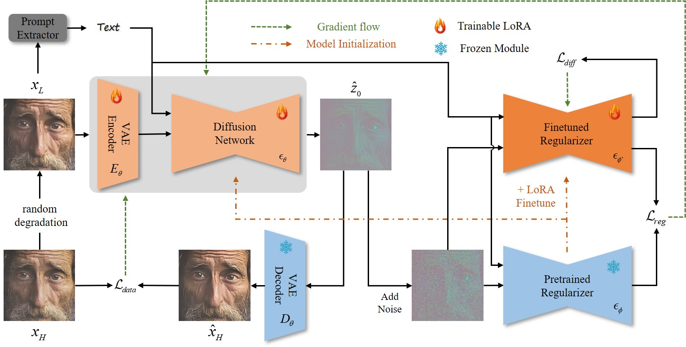
8. The Verdict What Actually Works?
After walking through a decade of methods, the landscape is clearer than it might seem. The choice of approach almost entirely depends on what you're optimising for:
| Method Class | Representative | Best PSNR | Speed | Right when... |
|---|---|---|---|---|
| Classical | BM3D, Wiener | 31.6 dB (CBSD68 σ50) | Slow (CPU) | No training data, known noise type |
| Shallow CNN | DnCNN, FFDNet | 31.7 dB | Very fast | Specific noise type, tiny deployment footprint |
| Deep CNN (RRDB) | Real-ESRGAN | 28–32 dB (joint tasks) | Fast (GPU) | Joint denoising+SR, domain fine-tuning |
| Encoder-Decoder | NAFNet, MPRNet | 40.3 dB (SIDD real) | Fast | Real noise, strong deployment constraints |
| Transformer | DRCT, HAT | 38.9 dB (Set5 ×2) | Medium | Maximum PSNR on clean SR, compute available |
| Diffusion | DiffBIR, OSEDiff | ~27 dB, best LPIPS | Slow–Medium | Perceptual quality matters more than fidelity |
The finding that crystallises everything: for PSNR and SSIM, well-tuned CNNs beat billion-parameter diffusion models. In our experiments, fine-tuning a 16.7M-parameter Real-ESRGAN for 50 epochs on 2400 domain-specific pairs gave SSIM = 0.808 better than DiffBIR (1.7B parameters, 10.9s/image, ~25 dB) and dramatically better than SUPIR (6B parameters, 896 A100-GPU-days of training, ~21 dB PSNR which is below the bicubic baseline). Diffusion models maximise perceptual realism by sampling from the conditional distribution rather than predicting its mean. This produces sharper, more visually convincing outputs but those outputs are not necessarily close to the specific ground truth, which is exactly what PSNR and SSIM measure.
The most instructive result from this whole exercise: after fine-tuning, the PSNR improvement came not from changing the architecture (still the same 23-RRDB generator), not from adding parameters, not from a smarter training algorithm but entirely from showing the model what our specific type of noise and resolution change look like. The pretrained Real-ESRGAN weights already had rich general priors about degradation from its diverse training pipeline; 50 epochs of gradient descent on 2400 domain-specific pairs shifted those priors to match our exact data distribution. That's transfer learning at its most direct. The prior is everything, and the prior is learnable from Wiener's analytically derived frequency-domain optimum, through BM3D's non-local patch statistics, through DnCNN's data-driven noise model, through RRDB's dense feature reuse, through Restormer's channel-wise attention, all the way to Stable Diffusion's 2.3-billion-image prior. The question "what does a natural image look like?" has gotten richer answers over the years. The compute bill has gotten larger. The PSNR has for the most part gone up.
References
- Dabov et al. (2007). Image denoising by sparse 3D transform-domain collaborative filtering. IEEE TIP.
- Dong et al. (2014). Learning a deep convolutional network for image super-resolution. ECCV. → srcnn_2014.pdf
- Zhang et al. (2017). Beyond a Gaussian denoiser: Residual learning of deep CNN for image denoising. IEEE TIP. → dncnn_2016.pdf
- Zhang et al. (2018). FFDNet: Toward a fast and flexible solution for CNN-based image denoising. IEEE TIP. → ffdnet_2018.pdf
- Lim et al. (2017). Enhanced deep residual networks for single image super-resolution. CVPRW. → edsr_2017.pdf
- Zhang et al. (2018). Image super-resolution using very deep residual channel attention networks. ECCV. → rcan_2018.pdf
- Wang et al. (2018). ESRGAN: Enhanced super-resolution generative adversarial networks. ECCVW. → esrgan_2018.pdf
- Wang et al. (2021). Real-ESRGAN: Training real-world blind super-resolution with pure synthetic data. ICCVW. → real_esrgan_2021.pdf
- Zhang et al. (2021). Designing a practical degradation model for deep blind image super-resolution. ICCV. → bsrgan_2021.pdf
- Zamir et al. (2021). Multi-stage progressive image restoration. CVPR. → mprnet_2021.pdf
- Chen et al. (2022). Simple baselines for image restoration. ECCV. → nafnet_2022.pdf
- Liang et al. (2021). SwinIR: Image restoration using Swin Transformer. ICCVW. → swinir_2021.pdf
- Zamir et al. (2022). Restormer: Efficient transformer for high-resolution image restoration. CVPR. → restormer_2022.pdf
- Chen et al. (2023). Activating more pixels in image super-resolution transformer. CVPR/TPAMI. → hat_2023.pdf
- Hsu et al. (2024). DRCT: Saving image super-resolution away from information bottleneck. ICML. → drct_2024.pdf
- Saharia et al. (2022). Image super-resolution via iterative refinement. IEEE TPAMI. → sr3_2021.pdf
- Yue et al. (2023). ResShift: Efficient diffusion model for image super-resolution by residual shifting. NeurIPS. → resshift_2023.pdf
- Lin et al. (2024). DiffBIR: Towards blind image restoration with generative diffusion prior. ECCV. → diffbir_2023.pdf
- Wu et al. (2024). OSEDiff: One-step effective diffusion based super-resolution. NeurIPS. → osediff_2024.pdf
- Wu et al. (2024). SeeSR: Towards semantics-aware real-world image super-resolution. CVPR. → seesr_2024.pdf